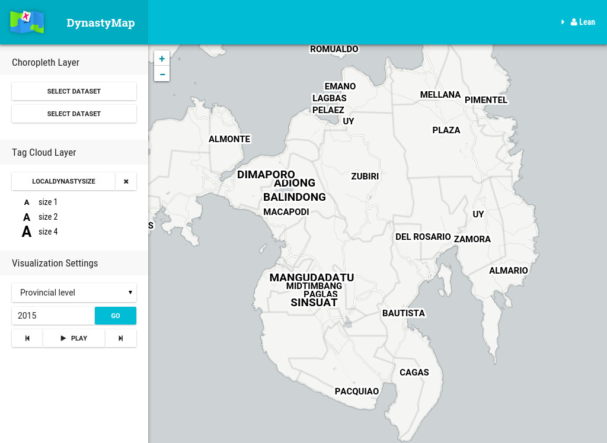
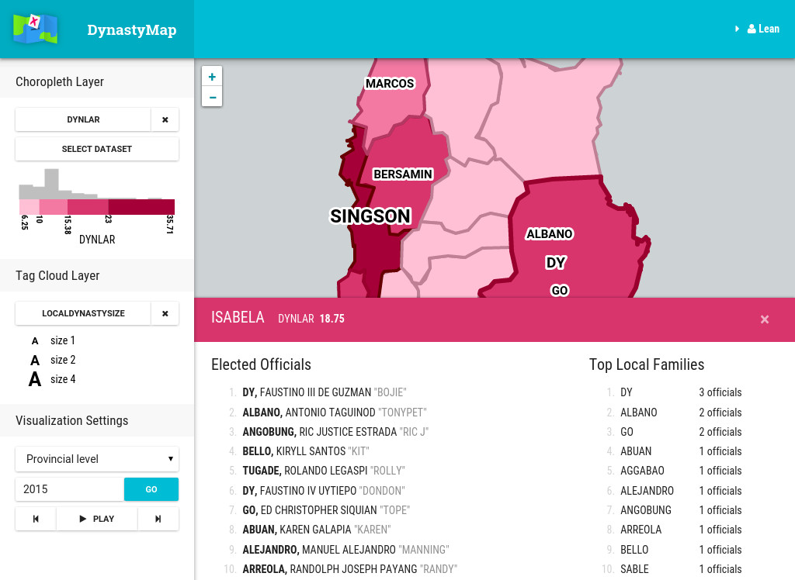
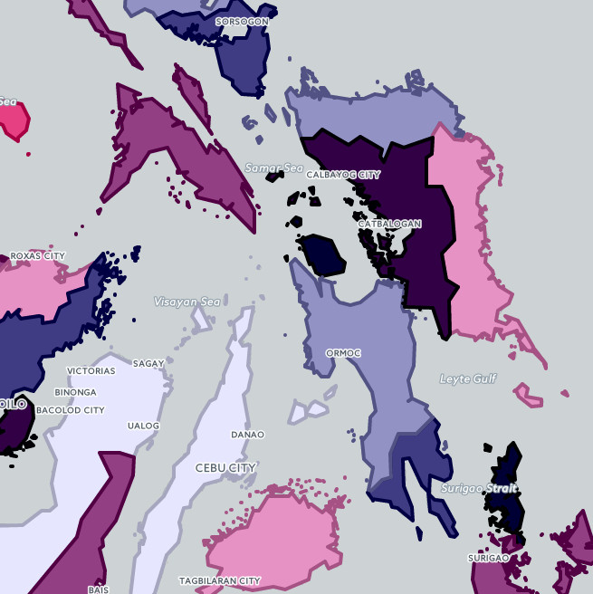

Dynasty Map
Visualization of political dynasties in the Philippines.
Political dynasties are prevalent in Philippine politics.
We all know they're bad, but how can we justify that view? We can look into data and statistics. An easy way to study data is through data visualization.

DynastyMap is a webapp for visualizing political dynasties and comparing it with other variables such as population and poverty indicators.

Main features of the app are: computation political dynasty prevalence in LGUs, and visualization of dynasties along with various user-uploaded datasets.

This webapp is a SPA made in React and Backbone.js. I used Leaflet and D3.js for the visualizations.
Server-side is PHP with Slim and Medoo. I used Python for data processing &emdash; computation of dynasty variables and GeoJSON processing.

I got the data from COMELEC and Open Data PH.
I had to scrape election results from the 2015 COMELEC website because they didn't have an API.
For anyone trying this kind of thing today, fortunately, election results are now available in CSV on Open Data PH.

This project was developed as a requirement (Special Problem) for my Computer Science B.S. degree. The idea of political dynasty visualization came from one of my professors. It was also inspired by Hans Rosling's visualizations and Trendalyzer.
An instance of the app is hosted on the university's development server, but it's not working and I no longer maintain it. You can still see the landing page and the bare app there.